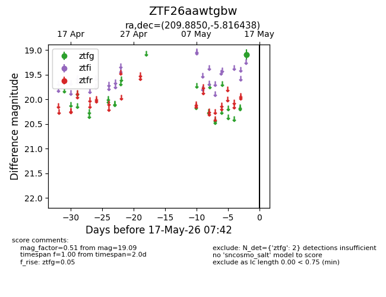
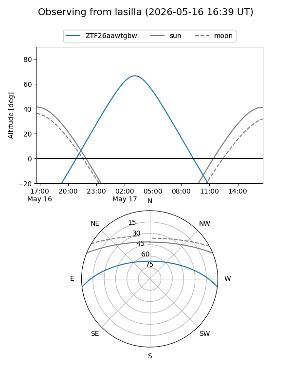
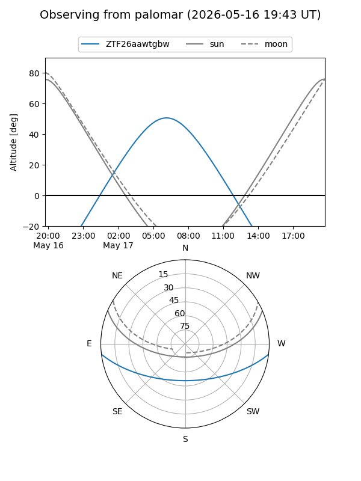

ZTF26aawtgbw
Target ZTF26aawtgbw at 2026-05-17 07:44
Aliases and brokers:
FINK: link
Lasair: link
ALeRCE: link
alt names
ZTF26aawtgbw (ztf,fink_ztf)
Coordinates:
equatorial (ra, dec) = 209.8850,-5.81644
equatorial (HMS+DMS) = 13:59:32.40,-05:48:59.18
galactic (l, b) = (332.0039,+53.16761)
Flags:
Photometry:
last ztfg=19.09
2 ztfg detections
Lightcurve

Visibility


Additional plots